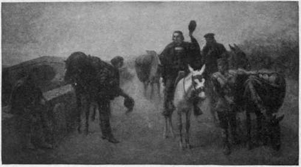

Recall Of Columbus
Description
This section is from the book "The National Capitol. Its Architecture Art And History", by George C. Hazelton, Jr. Also available from Amazon: The National Capitol Its Architecture Art and History.
Recall Of Columbus
On the wall above and opposite the Battle of Lake Erie hangs a painting which commands the admiration of artists. Its title is the Recall of Columbus. This picture is by a. o. Heaton of Washington, D. C, and was bought by the government in 1884 for $3,000. It was completed in Paris from studies made at the scene of the event, near Granada, Spain, and represents the turning point in the career of the great discoverer. As narrated by Washington Irving, Columbus, at nearly sixty years of age, made his last appeal for aid to Ferdinand and Isabella, then in their camp at Santa Fe; and being refused, started, discouraged but not defeated, to seek help from the sovereign of France. After his departure, Isabella was urged by Columbus' friends to reconsider his cause in the interest of religious propagation as well as of national glory and aggrandizement. Her zealous spirit yielded at last to their eloquence; and, determined, if necessary, to sacrifice her jewels, she dispatched a messenger in haste after Columbus, who was overtaken in his journey at the bridge of Pinos, midway between Santa Fe and Granada. The picture represents this eventful moment in Columbus' life. With halted mule, he receives the communication of the shrewdly courteous messenger, who has dismounted from one of the spirited blue-black steeds of Andalusia. The disappointments of years yield to the sweet whispers of renewed hojje; yet the lessons of experience and an inborn dignity still control his countenance. He raises his cap not more in exultation than in courtly salute to the royal messenger. A mounted companion's less reserved in his curiosity; and a muleteer, half suspicious of an interrupted journey, restrains one of the pack of mules he is leading, while mechanically covering a pannier, suggestive of the discoverer's mission. At the roadside, an old gipsy gazes stoically upon the scene, while a little child by him shrinks closer in fear of the restive horse of the messenger.
*J. Alexander Perry, warranted 1811 ; commissioned as Lieutenant April 1, 1822; drowned in an attempt to save a sinking officer. At the time of the battle he was a second Aid to the Commodore, being then thirteen years old. Another brother, Matthew Calbraith Perry, organized and commanded the expedition to Japan ; delivered the President's letter of July 14, 1853 ; and on the 31st of March, 1854, signed the treaty of peace.
RECALL OF COLUMBUS.
It is claimed for the artist that in his work he has devoted the utmost study to details. The face of Columbus is the result of a close comparison of one actual, and many reputed, likenesses in painting and engraving at Madrid, and in sculpture and mosaic at Genoa, Columbus' birthplace, with regard also to the descriptive verses of a contemporary Spanish poet. The mule studies were made in Spain and from animals in the stables of the ex-queen of Spain, in Paris. The costumes and trappings are characteristic of the country and epoch, and the landscape suggests the mild winter day of southern Spain.
Continue to: